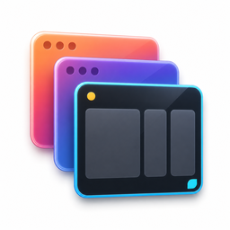

Application switching
Move between apps without losing your place.
Configurable Cmd-Tab switching brings a compact, focused overlay to your workflow. Forward and reverse cycling are always one rhythm apart.

SwitchTabNo swiping. No Mission Control. Just the window.
SwitchTab gives your apps and windows a calm, focused shortcut. Use ⌘Tab for apps and ⌘` for windows in the app you are using.
Get it running
Install the latest signed release with Homebrew, or grab the DMG straight from GitHub. No account, no subscription.
The flow
Press your shortcut and the switcher appears exactly where you need it.
Tap through apps or windows. The selected destination stays clear.
Let go and land there. Click works too when your pointer is closer.
Everything in reach
Built for the moment between “where was that?” and “there it is.”
Application switching
Configurable Cmd-Tab switching brings a compact, focused overlay to your workflow. Forward and reverse cycling are always one rhythm apart.
Current-app windows
Use Cmd-Backtick to stay inside the app at hand. Window titles and previews make the next destination unmistakable.
Fewer places to look
Spaces and second monitors ask you to remember geography. SwitchTab asks you to remember one shortcut — stack windows wherever they land and pull the one you want to the front.
Private by design
Accessibility powers focus and switching. Screen Recording is only for previews. No account, ads, subscription, or telemetry.